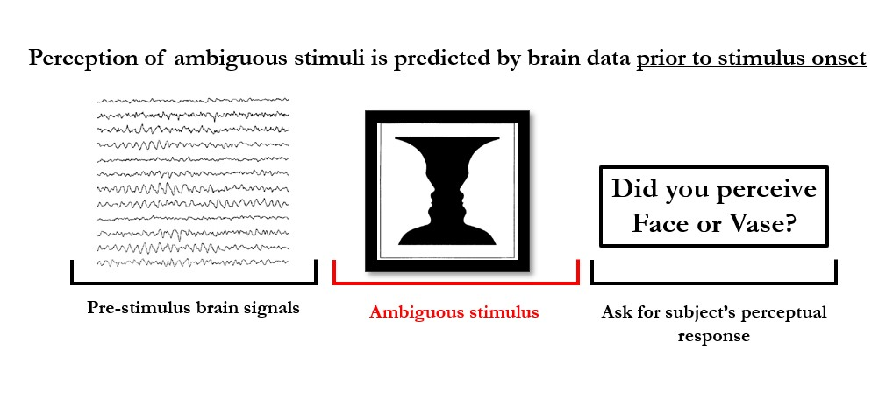
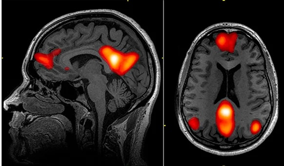
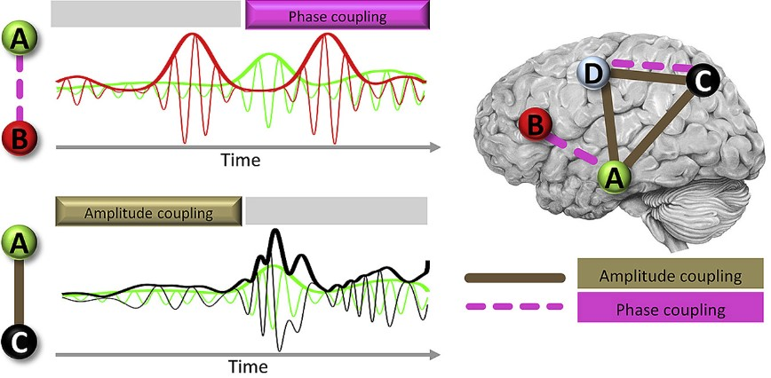
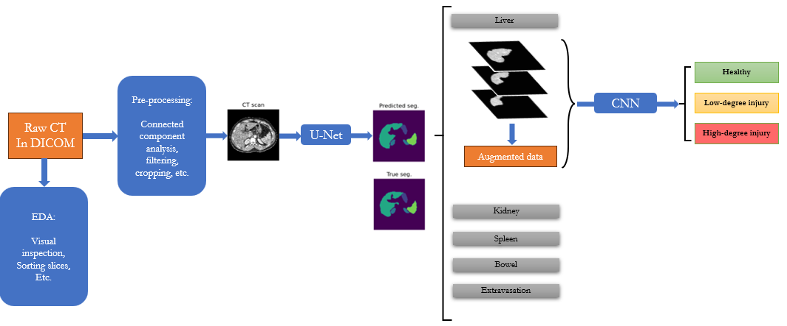
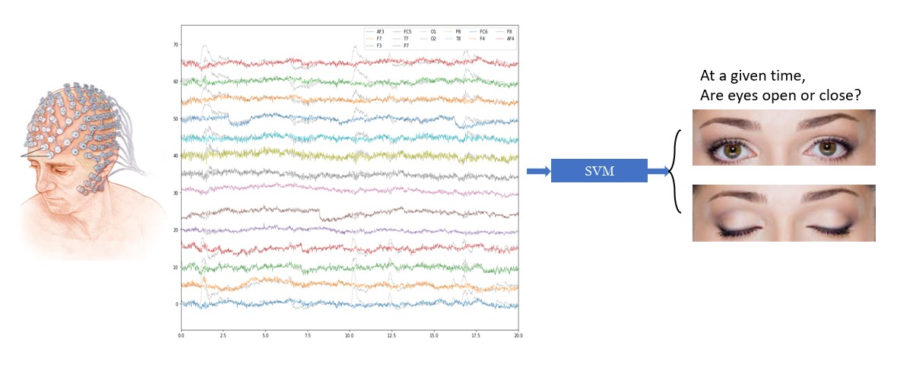
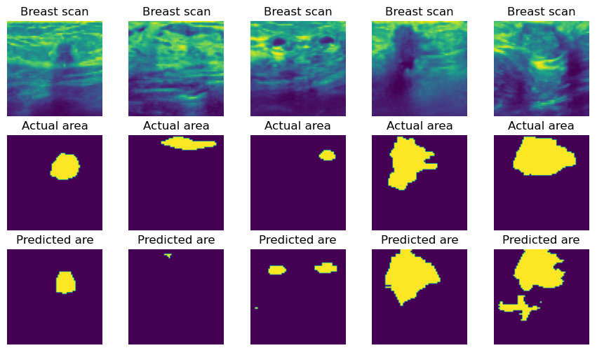
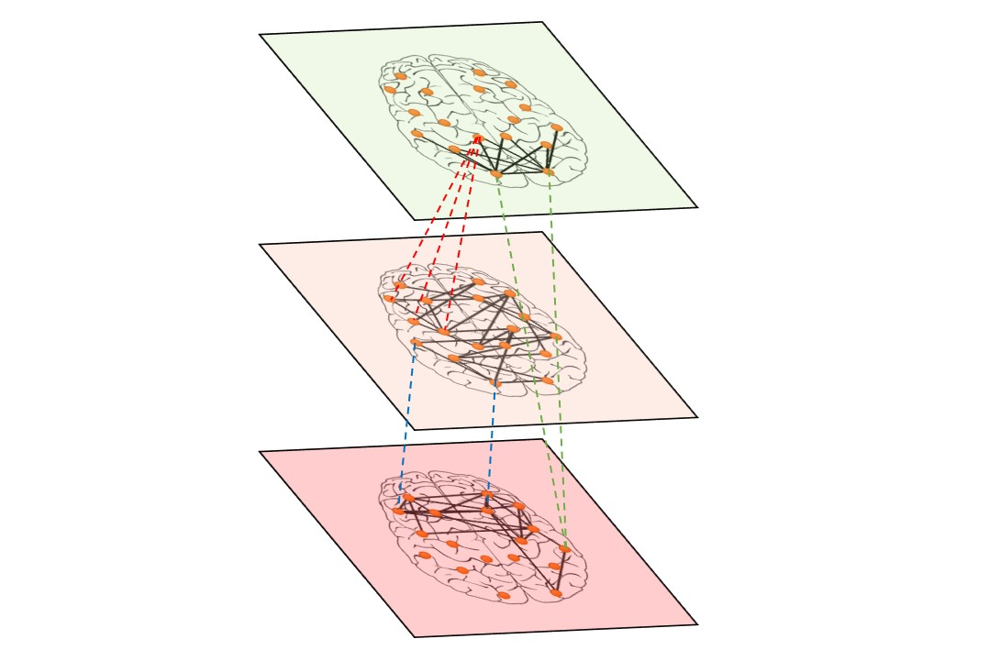
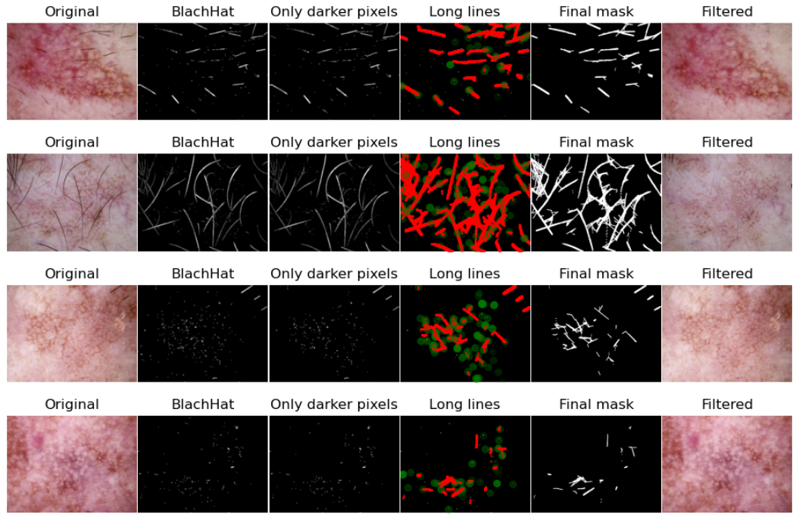

Welcome to my portfolio...
Hello! I'm a Neuroscience Ph.D. candidate at the University of Illinois at Urbana-Champaign, with an M.Sc. in Biomedical engineering.
As my decade-long research on investigating the complexities of the human brain data has required advanced methodologies, I have developed expertise in biomedical data analysis, signal processing, machine learning, computer vision, statistics; and the list goes on.
As a neuroscientist with an engineering background, a strong passion for applications of machine learning in healthcare has grown in me over years.
I aspire to leverage cutting-edge technology to advance our comprehension of the human body and mind, leading to development of neural interfaces and prognostics/diagnostics for diseases like cancer and mental illnesses. I can summarize my portfolio into three main skillsets as follows...
(1) Handling varoius biomedical data:
I've simmered -over years- a proficiency in handling versatile biomedical data including signals (intracranial or scalp EEG, fMRI, and ECG),
images (CT, Ultrasound, and skin), graphs (brain networks), and tabular data.
(2) Expertise in ML and deep learning:
Majority of my projects include ML algorithms of a wide range including predictive analysis, computer vision, dimensionality reduction, clustering, and so on.
Beyond research projects, I've fine-tuned my proficiency in deep learning through personal endeavors, which demonstrates my commitment to leveraging ML and AI in biomedical applications and pushing the boundaries of healthcare.
(3) Inter-personal skills:
Driven by an innate engineering mindset, I bring to the table an analytic mind with exceptional communication abilities.
Collaboration with international research projects has honed my capacity to seamlessly integrate into interdisciplinary teams, ensuring efficient and impactful contributions.
I have put a brief overview of my projects below for a quick sneak peek:
Research Projects

Brain network dynamics predict perception of consectuive ambiguous stimuli
36 healthy participants where presented with ambiguous cognitive stimuli (e.g. Face/Vase).
From functional MRI data, I extracted participants' brain network dynamics 5 seconds prior to stimulus onset.
I trained a kernel-SVM model on the pre-stimulus data which was able to predict the perception of the ambiguous stimulus better than a data-driven permutation-based null model (Z-score > ~10)

Clustering of brain networks reveal brain states that converge between intracranial EEG and fMRI
I extracted brain network dynamics of 11 epileptic patients in an extremely rare concurrent intracranial EEG and fMRI data.
Using K-means clustering, I was able to identify brain states causing the fMRI-iEEG convergence.
This study was a highly collaborative project with several neurosurgeons and engineers based across the US and Europe.
This study is currently published at BioRxiv as a preprint.

Coupling of brain signals via phase or amplitude reveals distinct mechansims of information exchange
I studied the spatial and temporal characteristics of amplitude coupling and phase coupling of the brain regions.
This study involved a great amount of signal processing and statistical analyses.
This study is published at the NeuroImage journal.
Running a pilot study on human cognitive flexibility funded by National Science Foundation (NSF)
Led a pilot study that received funding by the NSF
(National Science Foundation) in 2023.
I designed and developed a graphic user interface to experiment a complicated
cognitive task. I collected behavioral responses of ~20
healthy participants and extracted initial results which went
into the grant application.
Personal Projects

Multi-organ abdominal trauma detection in CT scans using multi-model deep learning
I developed a multiple-model deep learning architecture to
detect presence of abdominal trauma in four abdominal organs (Liver, Spleen, Kidney, Bowel) and active
extravasation using over 400GB of CT-scan images. After an in-depth data cleaning,
I trained a 2D U-Net from scratch to segment the organs (>90% dice score).
CT images masked with the calculated segmentations were fed to a downstream CNN architecture
to identify the degree of trauma in the corresponding abdominal organ.
(~0.20 log-loss error).

Prediction of eye state (open/close) in EEG data using kernel SVM
I implemented an SVM classifier that predicts the state of the eyes
(open or closed) using scalp EEG recordings.
This accuracy was above 99% which was only achievable due to intense data cleaning and proper
feature extraction. I used Independent Component Analysis (ICA) for removing eye
blink artifacts, interpolation for correcting for electrode jump artifacts,
and zero-phase filtering for extracting relevant alpha band oscillations.

Breast cancer segmentation in X-Ray images using UNet
I implemented a 2D U-Net from scratch to segment cancerous
regions of breast. Despite the unreliable ground truth segmentations
of this Kaggle dataswt, I achieved a competitive dice score of ~75%.

Melanoma skin cancer detection using CNN
Designed a CNN architecture to classify Melanoma skin cancer
from other benign skin conditions. I achieved an accuracy of approximately 90% in predicting the skin condition.

"Network of Networks" extracted in EEG using graph node embeddings
EEG signals unfold across different frequency bands, where each band manifests a brain network.
I wanted to characterise the unknown cross-band interaction of such networks.
I implemented MANE algorithm from scratch to extract node embeddings of such networks.
Extracted node embeddings allowed me to estimate the cross-band interactions. Finally, using K-Means, I identified
the recurrent clusters among the observed interaction patterns.

Implemented an image processing pipeline to remove hairs from skin images
I applied a sophisticated image processing pipeline using OpenCV library to skin images
in order to remove extra hairs that may deteriorate model performance in diagnosis of skin conditions.
Mini-Projects
Synthetic data generation using GANS
I implemented a Convolutional Generative Adversarial Network
from scratch and applied to MNIST data to create synthetic MNIST data samples.
MNIST morphological transform using Variational Autoencoders
I implemented a Variational Autoencorder to learn the low-dimensional representation of MNIST digits
and create morphologically transformed digits.
Stock price prediction using RNN
I implemeneted an RNN architecture which could reliably predict APPLE and GOOGLE stock price movements over upcoming days.
Frequenct pattern mining with A-priori algorithm
I implemented the A-priori algorithm from scratch and applied it to a grocery shopping list dataset.
Implemented Gaussian Mixture Model (GMM) on simulated data
I implemeneted from scratch a GMM which could successfully cluster the simulated data.
Image classification of CIFAR10 dataset using Res-Net
I implemented from scratch a CNN with residual connections to train on CIFAR10 dataset. MY model achieved >90% accuracy.
Backpropgation implementation from scratch in a Multi-layer perceptron (MLP)
I implemented a forward-backward propagation algorithm on a neural network architecture from scratch.
Digit classification in MNIST data using CNN
I was able to classify MNIST data with my CNN model with >99% accuracy.
Exploratory data analysis of abdominal trauma CT images
I performed an instensive exploratory data analysis on the abdominal trauma CT scan dataset which is discussed above.
Exploratory data analysis of mental health facilities around the world
I downloaded several csv data from WHO website in order to build a bigger data on mental health facilities around the world.
I first cleaned each csv and then merged them. Finally, I performed an exploratory data analysis on the merged data which resulted in some interesting insights.
Getting In Touch
I would be more than happy to discuss these projects in more details.
So please feel free to shoot an email to me using the address below:
{kind=link}
{kind=link}
{kind=link}
{kind=link}
{kind=link}
{kind=link}
{kind=link}
{kind=link}
{kind=link}